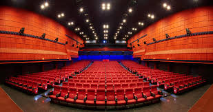

MALAR ARASAN CINEMAS
MULTIPLEX THEATRE

3D movies, Live performances, Arcade games, Restaurant, Stadium seating, and Onsite services.
Malar Arasan Theatre in Tiruchengode was renovated and reopened by Vettri Theatres on August 11, 2023.
The renovated theatre includes 4K RGB Laser and Dolby Atmos, and bookings are available on platforms like Paytm and TicketNew.
The theatre is open daily from 10:00 AM to 10:30 PM.